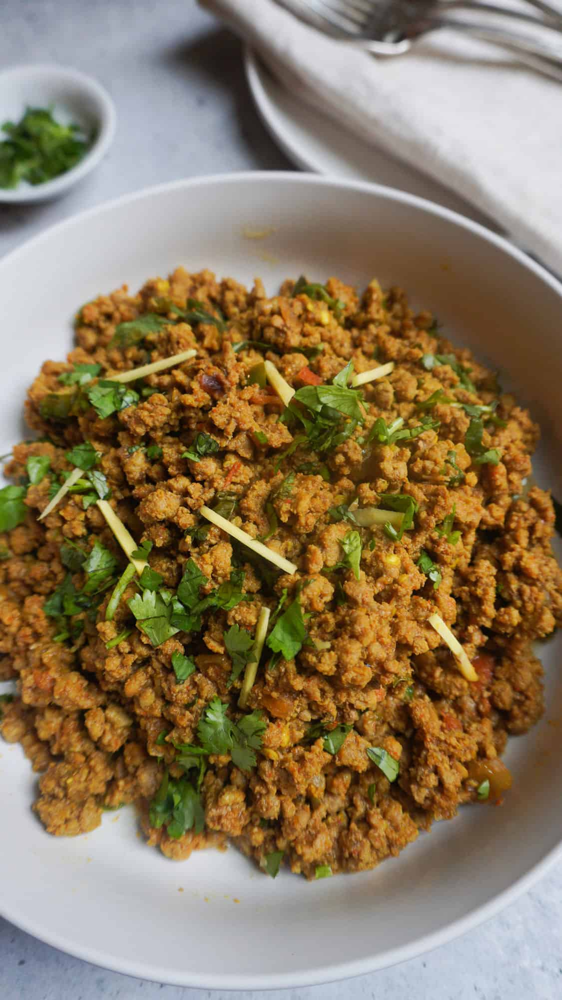

Keema

*Image and recipe is from Eat.Drink.Pure
Keema is a Pakistani dish made from minced meat which is cooked with various spices. From the description it seems like a very basic dish and it is.
Ingredients:
- 4 tbsp. oil
- 2 lb. ground beef
- 2 tsp. salt
- 2 tsp. red chili powder
- 2 tsp. coriander powder
- 1 tsp. garlic paste
- 1 tsp. ginger paste
- 1 tsp. turmeric powder
- 1 tsp. cumin powder
- 1 chopped medium tomato
- 1 chopped green chili pepper
- 1/2 diced medium onion
Steps:
- In medium sized pot fry onions on medium high heat until they are golden brown
- Add ginger and garlic and stir fry for 30 seconds
- Add beef and combine. Break up beef as you stir because it will clump
- Once beef is combined, add spices and stir
- Add tomatoes and green chili, lower heat and cover for 15 to 20 minutes
- Once tomatoes have softened. Increase heat to high and stir mixture until water dries